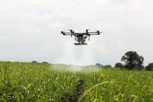

E X P L O R E
Agricultural Drones
 Agricultural Drones ar a new form of technology that applies to farming and helps increase the production of crops and monitor the growth of the crops. On some drones, one can create a path for the drone to take in order for it to cover the necessary area. AS the drone flies, it uses its Gps sensor and built-in camera to determine where photos need to be taken. This new tech also allows farmers to take clearer and richer pictures of the crops.
Businesses believe the overall drone market will be greater than 12billion dollars by 2021. The agricultural drone market, in specific, is expected to surpass $1 billion dollars by 2024 as predicted by Global Market Insights.
Meola, Andrew. “Exploring Agricultural Drones: The Future of Farming Is Precision Agriculture, Mapping, and Spraying.” Business Insider, Business Insider, 1 Aug. 2017.